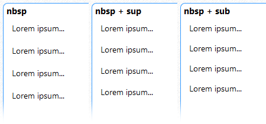

Об использовании нестандартных пробелов
В таблице символов Unicode имеется несколько видов нестандартных пробелов. Эти пробелы могут применяться для форматирования текста словарей такими способами, которые невозможно реализовать стандартными средствами DSL. Перечислим наиболее распространённые примеры:
- создание отбивок между абзацами;
- создание красных строк;
- эффект разрядки между буквами в словах.
Сымитировать перечисленное при помощи обычных пробелов не удаётся, поскольку в словарных программах действует правило их сокращения. Имитация успешно осуществляется при помощи пробелов нестандартных.
Красную строку, т.е. отступ первой строки в абзаце, можно набирать неразрывными пробелами обычной ширины (No-break space, первый в таблице ниже), как правило от 4 до 7. При этом последним пробелом, примыкающим к первой букве слова, рекомендуется ставить стандартный пробел (о причинах см. ниже).
Отбивка, т.е. пустая строка между абзацами, также создаётся при помощи неразрывного пробела, помещённого на отдельной строке. Для удобства чтения и дальнейшей обработки исходного DSL можно заключать пробел в тэг отступа [m0], хотя побочно это незначительно повлияет на размер файла.
Существует возможность регулировать высоту отбивки при помощи тэгов надстрочного [sup] и подстрочного [sub] индекса, расставленных вокруг неразрывного пробела. Это средство вполне работоспособно, но к сожалению неодинаково трактуется словарными программами. В Lingvo максимальная высота получается при употреблении [sub], а минимальная — при [sup]:

В GoldenDict максимальную высоту даёт неразрывный пробел без тэгов, а минимальную — в связке с [sub]:

Помимо неразрывного пробела для перечисленных целей можно использовать любой другой нестандартный пробел. Единственное преимущество первого в том, что он более распространён в шрифтах, чем другие.
Относительное неудобство, возникающее при работе с нестандартными пробелами, как и с другими специальными символами, заключается в том, что для доступа к ним напрямую с клавиатуры не предусмотрены отдельные клавиши. Это препятствие преодолевается следующими способами.
Можно воспользоваться сторонней утилитой BabelMap (или её аналогами: PopChar, системной Character Map), при помощи которой откопировать нужный символ в текст словаря и далее дублировать его по необходимости.
Можно использовать способ набора с клавиатуры при помощи т.н. Alt-кодов. Как правило в профессиональных текстовых редакторах такой способ доступен и заключается в следующем. Для вставки в текст требуемого символа, нужно зажать клавишу Alt и, не отпуская клавишы, набрать десятичный код этого символа на цифровой клавиатуре (отдельная группа клавиш в правой части полной клавиатуры, т.н. NumPad). Так, например, для вставки неразрывного пробела (No-break space) необходимо зажать Alt и набрать на NumPad 0160, для вставки M-пробела (Em space) — Alt+8195. В некоторых редакторах перед десятичным кодом требуется дополнительно набирать ноль 0 или два ноля 00.
Можно воспользоваться возможностями поиска/замены. Вначале набрать произвольный символ в местах, где необходимо вставить нестандартный пробел, а затем заменить набранный символ на требуемый при помощи регулярных выражений. Например:
- Набираем слово р@а@з@р@я@д@к@а.
- Выделяем это слово и вызываем диалог поиска/замены.
- В поле Найти набираем @, а в поле Заменить — \u2008 (Escape-последовательность с шестнадцатеричным кодом т.н. пунктуационного пробела).
- Активизируем переключатели Регулярные выражения и Заменить в выделенном отрывке, затем жмём на кнопку Заменить всё.
- Смотрим на результат: слово «р а з р я д к а» отображается на экране с эффектом разреженного текста.
| Название в Юникоде |
Код в Юникоде | Выглядит | Мнемоника в HTML 4 |
Пояснения | |
|---|---|---|---|---|---|
| HEX | DEC | ||||
| NO-BREAK SPACE | A0 | 160 | | аналогичен обычному пробелу, но неразрывный | |
| EN QUAD | 2000 | 8192 | канонически эквивалентен символу 0x2002 EN SPACE | ||
| EM QUAD | 2001 | 8193 | канонически эквивалентен символу 0x2003 EM SPACE | ||
| EN SPACE | 2002 | 8194 |   | равен половине кегля шрифта (исторически такой была ширина заглавной буквы «N») | |
| EM SPACE | 2003 | 8195 |   | равен кеглю шрифта (исторически такой была ширина заглавной буквы «M») | |
| THREE-PER-EM SPACE | 2004 | 8196 | ближе всех к обычному пробелу, втрое меньше, чем EM-SPACE | ||
| FOUR-PER-EM SPACE | 2005 | 8197 | в четыре раза меньше, чем EM-SPACE | ||
| SIX-PER-EM SPACE | 2006 | 8198 | в шесть раз меньше, чем EM-SPACE | ||
| FIGURE SPACE | 2007 | 8199 | имеет такую же ширину, что и цифры в текущем шрифте; предназначен для набора таблиц; неразрывный | ||
| PUNCTUATION SPACE | 2008 | 8200 | ширина равна ширине точки | ||
| THIN SPACE | 2009 | 8201 |   | обычно имеет ширину в 1⁄5 (реже — в 1⁄6) кегля; пропорционально соответствует двухпунктовой шпации при наборе кеглем в 10 пунктов |
|
| HAIR SPACE | 200A | 8202 | самый тонкий пробел, соответствует самой тонкой шпации в кассе наборщика | ||
| ZERO-WIDTH SPACE | 200B | 8203 | ширина нулевая; ставится в местах, где нужно разорвать строку, не добавляя знак переноса; применяется в языках, где нет пробелов; при выравнивании текста по ширине может расширяться, как и любой другой пробел | ||
| NARROW NO-BREAK SPACE | 202F | 8239 | узкий неразрывный пробел | ||
| MEDIUM MATHEMATICAL SPACE | 205F | 8287 | узкий пробел, применяемый в математических формулах | ||
| WORD JOINER | 2060 | 8288 | аналогичен ZERO-WIDTH SPACE, но неразрывный | ||
| IDEOGRAPHIC SPACE | 3000 | 12288 | используется в восточных языках; равняется ширине одного иероглифа |
||
| Источник таблицы: Энциклопедия Руниверсалис, статья Пробел. | |||||
Замечания: При использовании нестандартных пробелов необходимо учитывать, что не во всех шрифтах есть глифы для их отображения. Впрочем, в современных программах этот недостаток нивелируется благодаря системе подстановки шрифтов.
Текущая версия Lingvo (x6) не воспринимает нестандартные пробелы как разделители слов. Это оказывает влияние на поиск слов в тексте словарей, приводя к следующим последствиям:
- Нестандартный пробел, прилегающий к слову, воспринимается как часть слова, его дополнительная буква. Такие слова не ищутся ни порознь, ни вместе при полнотекстовом поиске, если в соответствующих местах строки поиска не вставить употреблённый пробел.
- Нестандартный пробел, стоящий обособленно, воспринимается как отдельное слово. Это влияет на результаты поиска при включенной настройке Ограничивать расстояние: Не более N слов между словами запроса.
Во избежание 1о последствия при создании красных строк после группы неразрывных пробелов перед примыкающим словом рекомендуется ставить один обычный пробел (как было упомянуто выше). Во избежание 2о последствия можно заключать обособленные нестандартные пробелы в тэг [!trs], соблюдая при этом и правило его расположения — только внутри одной из зон индексирования.
На работу поисковой системы в программе GoldenDict наличие в тексте нестандартных пробелов не влияет.